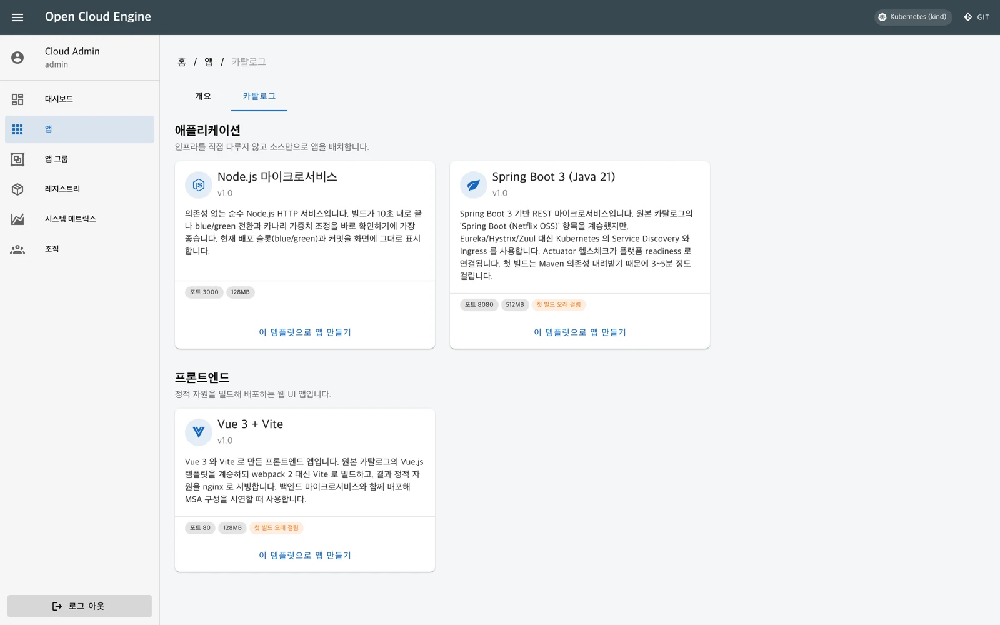
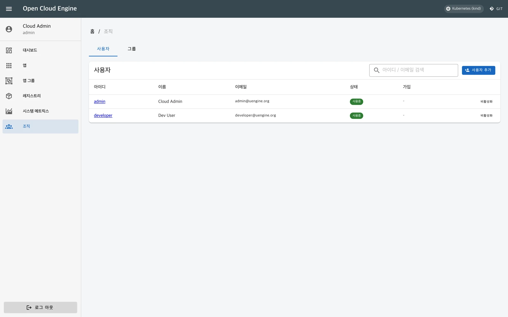

템플릿으로 시작하는 서비스
카탈로그에서 템플릿을 고르고 이름과 자원을 정하면 Git 저장소와 첫 배포 파이프라인이 준비됩니다. 조직의 표준 프로젝트를 재사용합니다.
Open Source PaaS · Kubernetes
Kubernetes 기반 개발자 셀프서비스 PaaS 포털
2026년 제품 데모 · 앱 생성부터 무중단 전환·노드 이동까지 약 6분
uEngine Cloud는 Kubernetes 위에서 동작하는 개발자 셀프서비스 PaaS 포털입니다. 카탈로그에서 서비스를 만들면 Git 저장소 생성, 이미지 빌드, 개발·스테이징·운영 배포까지 하나의 흐름으로 이어집니다.
개발자는 소스코드를 올리고, 운영자는 같은 앱 화면에서 자원·로그·지표와 배포 상태를 확인합니다. 검증한 이미지를 다시 빌드하지 않고 운영까지 올리며, 트래픽 전환과 이전 버전 복귀도 포털에서 처리합니다.
서비스 생성부터 운영까지, 실제 Kubernetes 클러스터에서 동작하는 제품 화면입니다.
화면을 누르면 크게 볼 수 있습니다. 표시된 앱과 수치는 데모 환경 기준입니다.
| 전략 | 운영 방식 |
|---|---|
| 블루그린 | 새 버전을 반대 슬롯에 배포하고 트래픽을 전환합니다. 확정 전까지 이전 슬롯을 유지합니다. |
| 카나리 | 신규 버전으로 보낼 트래픽 비율을 지정하고 점진적으로 조정합니다. |
| A/B 테스트 | 지정한 요청 헤더를 가진 요청을 신규 버전으로 전달합니다. |
| 세션 고정 | 같은 사용자의 요청이 같은 인스턴스로 전달되도록 설정합니다. |
| 롤링 속도 | 교체 중 동시에 추가하거나 줄일 인스턴스의 비율을 조정합니다. |

포털·저장소·레지스트리·인증 서버를 사내 Kubernetes 환경에 구성합니다. 필요한 이미지를 사전에 반입하면 폐쇄망에도 설치할 수 있습니다.
OAuth 2.0·OIDC 기반 인증과 관리자·일반 사용자 역할, 그룹 관리를 제공합니다. 기존 저장소·레지스트리·인증 체계의 연동 방식은 도입 환경에 맞춰 구성합니다.
MIT 라이선스로 소스가 공개되어 있어 템플릿과 화면을 조직 표준에 맞게 확장할 수 있습니다. 설치 구성·운영 문서·교육과 시범 서비스 적용을 함께 검토합니다.
2003년 공개한 uEngine BPM에서 출발해, 2013년 OCE(Open Cloud Engine) 연합의 오픈소스 PaaS, 2018년 MSA 기반 DevOps로 발전해 왔습니다. 현재는 Kubernetes를 지원하며 설계·구현 도구인 Robo Architect와 배포·운영을 연결합니다. 이 과정에서 쌓은 경험을 기업 컨설팅과 MSA School 교육으로 나누고 있습니다.
| 고객 | 주요 수행 내용 |
|---|---|
| KIAT · 공공 R&D 기관 | OCE 기반 클라우드 풀·공용 앱스토어 구축 (2013–2014) |
| 한화그룹 · 한화시스템 | BPM 도입, MSA 전환 컨설팅·교육, 한화생명 BPM 사업 (2003–2025) |
| 정부24 | 클라우드 네이티브 MSA 컨설팅 (2025) |
| 포스코DX · 포스코 | 통합물류 컨설팅 및 AI 기반 설계·현대화 (2022–2025) |
| SK C&C · SK텔레콤 | MSA 교육 및 OSS 업무의 Process GPT 자동화 (2020–2026) |
| KB국민은행 | KB Wallet MSA 구현 컨설팅 (2023–2024) |
| LG CNS · LG에너지솔루션 | MSA 개발방법론 수립 및 제조·ERP BPM 구축 (2019–2024) |

Robo Architect가 요구사항을 분석해 마이크로서비스를 설계·구현하고 검증합니다. 생성한 산출물은 uEngine Cloud에 배포되어 Kubernetes 환경에서 실행됩니다.
명세와 코드의 변경은 Robo Architect에서 관리하고, 빌드·배포와 실행 상태는 uEngine Cloud에서 관리합니다. 설계부터 운영까지 하나의 개발 흐름으로 연결합니다.